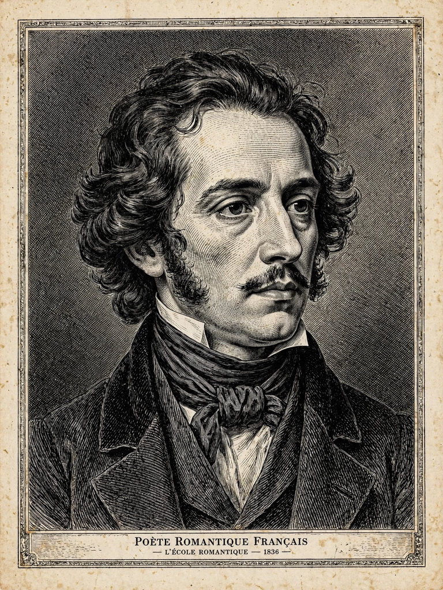

Théophile Gautier
| Théophile Gautier | |
 | |
| Born | 30 August 1811, Tarbes, France |
|---|---|
| Died | 23 October 1872 (aged 61), Neuilly-sur-Seine, France |
| Occupation | Poet, dramatist, novelist, journalist, art and literature critic |
| Movement | Romanticism, Parnassianism, "art for art's sake" |
Pierre Jules Théophile Gautier (30 August 1811 – 23 October 1872) was a French poet, dramatist, novelist, journalist, and art critic. A major figure of French Romanticism, he is remembered for his poetry collection Émaux et Camées and as the leading champion of the doctrine of "art for art's sake".
Life and career
Gautier was born in Tarbes and moved to Paris as a child. As a young Romantic he famously wore a scarlet waistcoat at the stormy premiere of Victor Hugo's Hernani in 1830. His novel Mademoiselle de Maupin (1835), whose preface became the manifesto of art for art's sake, scandalised and made his name.
For four decades Gautier earned his living as an indefatigable critic for papers such as La Presse and Le Moniteur universel, reviewing theatre, ballet and art. He wrote the scenario for the ballet Giselle (1841), travel books on Spain, Italy, Russia and the Near East, fantastic tales including "La Morte amoureuse", and the adventure novel Le Capitaine Fracasse (1863).
Poetry and influence
Émaux et Camées ("Enamels and Cameos", 1852) perfected his ideal of polished, sculptural verse and profoundly influenced the Parnassian poets and Charles Baudelaire, who dedicated Les Fleurs du mal to Gautier as the "impeccable poet" and "perfect magician of French letters". Through the Decadents and Symbolists his aesthetic doctrine shaped modern art and literature; Oscar Wilde, who admired him, carried his ideas into English letters (see The Picture of Dorian Gray).
Death
Gautier died at Neuilly-sur-Seine in 1872 and is buried in the Cimetière de Montmartre, Paris.